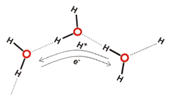
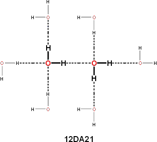
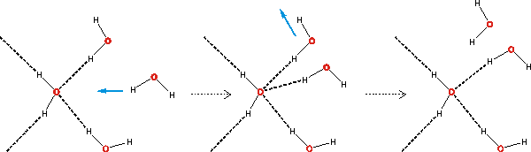

Hydrogen bonds are responsible for the life-giving properties of water.
 Hydrogen bonds
Hydrogen bonds
 Water hydrogen bonds
Water hydrogen bonds
 Hydrogen bond cooperativity
Hydrogen bond cooperativity
 Quantum effects
Quantum effects
 Water hydrogen bond 'wires'
Water hydrogen bond 'wires'
 Rearranging hydrogen bonds
Rearranging hydrogen bonds
 Hydrogen bonding and molecular recognition
Hydrogen bonding and molecular recognition
 Bifurcated hydrogen bonds
Bifurcated hydrogen bonds
 Information transfer
Information transfer
 Hydrogen bonds and solubility
Hydrogen bonds and solubility
'I believe ... it will be found that the significance of the hydrogen bond for physiology is greater than that of any other single structural feature.'
Linus Pauling, 1939
When a hydrogen bond forms between two water molecules, the redistribution of electrons changes the ability for further hydrogen bonding. The water molecule donating the hydrogen atom has increased electron density in its 'lone pair' region [577], which encourages hydrogen bond acceptance. The accepting water molecule has reduced electron density centered on its hydrogen atoms and its remaining 'lone pair' region [577], which encourages further donation but discourages further acceptance of hydrogen bonds. This electron redistribution thus results in cooperativity (e.g., accepting one hydrogen bond encourages the donation of another) and anti-cooperativity (for example, accepting one hydrogen bond discourages acceptance of another) in hydrogen bond formation in water networks. Cooperative hydrogen-bonding increases the O-H bond length while causing a 20-fold greater reduction in the H····O and O····O distances [436]. The increase in bond length has been correlated with the hydrogen bond strength and resultant O-H stretch vibrations [1318]. Thus O····O distances within clusters are likely to be shorter than those at the periphery, in agreement with the icosahedral cluster model. If the hydrogen bond is substantially bent then it follows that the bond strength is weaker. The main criteria to determine the strength of hydrogen bonds are their (relatively inaccurately determined) intermolecular distances and the (more precise) wavenumbers of their stretching vibrational modes and those of the donor hydrogen covalent bond. a Any factor, such as polarization, that reduces the hydrogen bond length, is expected to increase its covalency.
There is still some dispute over the size of this partial covalency in water with both 'in favor' (for example, [411] gives the 3a1 orbital as most responsible for the hydrogen-bonding via orbital mixing and [3423] finding that charge transfer likely accounts for over half of the hydrogen bond energy), 'against' (for example, [437] favors 'antibonding' rather than bonding due to the charge transfer and [438] suggests that the covalency hypothesis is heavily contaminated with basis-set superposition error [3140]) and 'neutral', in the recent literature. If the water hydrogen bond is considered within the context of the complete range of molecular hydrogen bonding, then it appears most probable that it is not solely electrostatic [447]. Indeed, (a) the dissociation of water, (b) the formation of the symmetrical 'Zundel' H5O2+ ion, (c) the continuous transformation of ice VII to ice X, and (d) the lower ionization potential for liquid water relative to water vapor would all seem to indicate a continuity of electron sharing between water molecules. Although N-H····N and N-H····O hydrogen bonds are known to be weaker than the O-H····O hydrogen bonds in water, there is clear evidence for these bonds' covalent natures from NMR [3347]. In nucleic acids, inter-nucleotide N-H····N coupling (2JNN, using 15N nuclei) confirms some covalent nature in the N-H····N hydrogen bond [779]. Also, 3-bond NMR (3JNC) splitting has been found through peptide N-H····O=C hydrogen bonds in proteins, confirming some covalent nature in the N-H····O hydrogen bond [780]. A quantitative relationship between the calculated covalency of hydrogen bonds in liquid water and the experimental anisotropy of the proton magnetic shielding tensor has been established. This has enabled the estimation of 0.01 e− electron transfer between the hydrogen-bonded water molecules with associated stabilization energy of 15 kJ ˣ mol−1 due to this charge transfer [2437]. The current definition for a hydrogen bond involves evidence for bond formation, which necessarily requires electron delocalization. Such electron delocalization in the water dimer has been estimated to involve a charge transfer of 0.0146 e− [2202].
However, any covalency will increase the network stability relative to purely electrostatic effects. The hydrogen bond in water dimers is sufficiently strong to result in the dimers persisting within the gas state within the lower atmosphere (troposphere) at significant concentrations [1977] (for example, ≈ 0.1% H2O at 25 °C and 85% humidity) to contribute significantly to the absorption of sunlight and atmospheric reaction kinetics [266]. The molecular orbitals involved in the hydrogen bonding between two water molecules and five water molecules in a cyclic pentamer are given on other pages.
Liquid water contains the densest hydrogen bonding of any solvent, with almost as many hydrogen bonds as there are covalent bonds. These hydrogen bonds can rapidly rearrange in response to changing conditions and environments (for example, solutes). The hydrogen-bonding patterns are random in water (and ice Ih); for any water molecule chosen at random, there is equal probability (50%) that the four hydrogen bonds (that is, the two hydrogen donors and the two hydrogen acceptors) are located at any of the four sites around the oxygen. Water molecules surrounded by four hydrogen bonds tend to clump together, forming clusters, for both statistical [11] and energetic reasons. Hydrogen-bonded chains (that is, O-H····O-H····O) are cooperative [379]; the breakage of the first bond is the hardest, then the next one is weakened, and so on (see the cyclic water pentamer). Thus unzipping may occur with complex macromolecules held together by hydrogen-bonding, for example, nucleic acids. Such cooperativity is a fundamental property of liquid water where hydrogen bonds are up to 250% stronger than the single hydrogen bond in the dimer [77]. This cooperativity gives rise to a collective nature in the water vibrations [2837]. A strong base at the end of a chain may strengthen the bonding further. The cooperative nature of the hydrogen bond means that acting as an acceptor strengthens the water molecule acting as a donor [76]. However, there is an anti-cooperative aspect in so far as acting as a donor weakens the capability to act as another donor, for example, O····H-O-H····O [77]. Therefore, It is clear that a water molecule with two hydrogen bonds, where they act as both donor and acceptor, is somewhat stabilized relative to one where it is either the donor or acceptor of two [3951]. This is the reason why it is suspected that the first two hydrogen bonds (donor and acceptor) give rise to the strongest hydrogen bonds [79]. A useful way of describing the cooperative/anti-cooperative nature of the water dimer hydrogen bond is to use the nomenclature d'a'DAd''a'' where DA represents the donor-acceptor nature of the hydrogen bond, the d'a' represents the remaining donor-acceptor status of the donating water molecule, and d''a'' represents the remaining donor-acceptor status of the accepting water molecule [852]. Individually, the most energetically favored donating water molecules have the structures 02DAxx, 12DAxx, 01DAxx, and 11DAxx with 00DAxx and 10DAxx disfavored whereas the most energetically favored accepting water molecules have the structures xxDA20, xxDA21, xxDA10, and xxDA11 with xxDA00 and xxDA01 disfavored. Related analyses have utilized the (H2O)6 clusters [2798], (H2O)8, (H2O)20 and (H2O)24 clusters including next-neighbor water molecules [2800], and an interesting push-pull mechanism [2984, 2999].
anti-cooperative cooperative
(= -d'+a'+d''-a'') |
 |
||||||
-2 |
-1 |
0 |
1 |
2 |
3 |
4 |
|
increasing
hydrogen bond strength |
|||||||
0b |
6 |
12 |
18 |
24 |
30 |
36 |
|
The dipole moment of each water molecule changes due to the induced dipole moments which are generated by its interaction with all the surrounding molecules. The calculated dipole moments of water molecules with their immediate neighbors are shown below [3597] (A = oxygen acceptor hydrogen bond, D = hydrogen donor hydrogen bond). The actual dipole moments will depend on the sum total of all surrounding water molecules but this indicates the increase in dipole moment with the increase in hydrogen bonding.
Calculated dipole moments of water molecules with their immediate neighbors [3597]

The calculated hydrogen bond strength versus bond length [1829]
Using a quantum chemical calculation of different clusters of water molecules has shown that the hydrogen-bonding strength can vary for as much as 90% between extreme cases of cooperativity and anti-cooperativity with cooperativity increasing (≈ 3 kJ ˣ mol−1) the bond strength and reducing (≈ 0.03 Å) the hydrogen bond length per added molecule and anti-cooperativity reversing these effects by the same amounts. The hydrogen bond strength is computed to vary for as much as 90% between extreme cases of cooperativity and anti-cooperativity [1829]. From this calculation, the difference in effect between the two anti-cooperative and four cooperative interactions in the above table would be ≈ 18 kJ ˣ mol−1 and ≈ 0.18 Å.
Cations may induce strong cooperative hydrogen-bonding around them due to the polarization of water O-H by cation-lone pair interactions (Cation+····O-H····O-H). Luck et al. [78] introduced a cooperativity factor for this effect, which varied as the Hofmeister series from K+ (1.08) to Zn2+ (2.5). Total hydrogen bonding around ions may be disrupted as if the electron pair acceptance increases (for example, in the water around cations) so the electron pair donating power of these water molecules is reduced, with opposite effects in the hydration water around anions. These changes in the relative hydration ability of salt solutions are responsible for the swelling and deswelling behavior of hydrophilic polymer gels [317].
The substantial cooperative strengthening of the hydrogen bond in water is dependent on long-range interactions [98]. This cooperative effect may be stronger in chains of ortho-water molecules due to spin coupling [2041]. Breaking one bond generally weakens c those around, whereas making one bond generally strengthens those around, and this, therefore, encourages larger clusters for the same average bond density. The hydrogen-bonded cluster size in water at 0 °C has been estimated to be 400 [77, 1791]. A weakly hydrogen-bonding surface restricts the hydrogen-bonding potential of adjacent water so that these make fewer and weaker hydrogen bonds. As hydrogen bonds strengthen each other in a cooperative manner, such weak bonding also persists over several layers and may cause locally changed solvation. Conversely, strong hydrogen bonding will be evident at a distance. The weakening of hydrogen bonds, from about 23 kJ ˣ mol−1 to about 17 kJ ˣ mol−1, is observed when many bonds are broken at superheating temperatures (> 100 °C) so reducing the cooperativity [173]. The breakage of these bonds is not only due to the more energetic conditions at high temperatures but also results from a related reduction in the hydrogen bond donating ability by about 10% for each 100 °C increase [218]. The loss of these hydrogen bonds results in a small increase in the hydrogen bond accepting ability of water, possibly due to increased accessibility [218].
Every hydrogen bond formed increases the hydrogen bond status
of two water molecules, and every hydrogen bond that breaks reduces
the hydrogen bond status of two water molecules. The network
is essentially complete at ambient temperatures; that is, (almost) all molecules are linked by at least one unbroken
hydrogen-bonded pathway. Hydrogen bond lifetimes are 1 - 20
ps [255], whereas broken
bond lifetimes are about 0.1 ps, with the proportion of 'dangling'
hydrogen bonds persisting for longer than a picosecond being
insignificant [849]. Hydrogen bonds vibrate with a period of almost 200 fs (≈ 180 cm−1). Hydrogen bonds that may break during this vibrational period usually reform the same bond within approximately150 fs. Broken bonds are unstable [849]
but will probably re-form to give the same hydrogen bond (as shown
by the slow ortho-water/para-water equilibrium process [410]),
particularly if the other three hydrogen bonds are in place;
hydrogen bond breakage being more dependent on the local structuring
rather than the instantaneous hydrogen bond strength [833].
If not, breakage usually leads to rotation around one of the
remaining hydrogen bond(s) [673]
and not to translation away, as the resultant 'free' hydroxyl
group and 'lone pair' are both quite reactive. Also significant,
if seldom recognized, is the possibility of the hydrogen bond
breaking, as evidenced by physical techniques such as IR,
Raman or NMR and caused by loss of hydrogen bond 'covalency'
due to electron rearrangement, without any angular change
in the O-H····O atomic positions.
Thus, clusters may persist for much longer times [329]
than a common interpretation of data from these methods indicates.
Evidence for this may be drawn from the high degree of hydrogen
bond breakage seen in the IR spectrum of ice [699],
where the clustering is taken as lasting essentially forever. [Back to Top  ]
]
The zero-point energy of the water molecule (H2O gas, 0 K, 55.44 kJ ˣ mol−1; D2O: gas, 0 K, 40.54 kJ ˣ mol−1: [8] ) is the lowest energy that it can have (even at zero kelvin). As the hydrogen atoms of the water molecule are light, their motion is relatively extensive, and the molecules retain significant vibrational energy even at absolute zero. It is a consequence of the ground state (lowest possible) vibrational and rotational energies. This is particularly relevanti in hydrogen bonding as any vibration in the direction of the hydrogen bond increases the strength of the hydrogen bond. In contrast, any vibration at right angles to the direction of the hydrogen bond decreases the strength. These may partially compensate. The rationale is that the shorter the hydrogen bond, the stronger the hydrogen bond. As deuterium (and tritium) is much heavier than protium (hydrogen; D/H = 1.998, T/H = 2.993) any vibrations that it is involved in are less extensive (shorter), and this lessens any effect on the hydrogen bond strength. At the same time, the O-D bond is 7.5 kJ ˣ mol−1stronger than the O-H bond due mainly to this zero-point energy. However, deuterium atoms also form stronger hydrogen bonds in water. The zero-point energy of liquid water has been estimated as ∼21 kJ ˣ mol−1 per O−H stretch, ∼15 kJ ˣ mol−1 per O−D stretch, and ∼12 kJ ˣ mol−1 per O−T stretch. This explains the large variation in the size of the isotope effects that are observed in water [2621].
When water molecules are forced closer together at high pressure, or at metal interfaces, proton tunneling between hydrogen-bonded water molecules can occur [2622].
Nuclear quantum effects in water molecules have been directly observed using liquid ultrafast electron scattering [4310]. The femtosecond response was determined to the excitation of liquid water's O-H stretching vibration (3,315 cm−1) with atomic spatial resolution. It showed that the hydrogen atoms tug and push neighboring water molecules when excited with laser light. A transient hydrogen bond contracted about 0.04 Å in 80 femtoseconds, followed by relaxation over about one picosecond.
[Back to Top  ]
]
Hydrogen-bonding is complemented by electron delocalization
Hydrogen bonds facilitate correlated electron movement between molecules [2460]. Clusters linked by extensive hydrogen bonding can be considered as being connected by extensive but complementary electron delocalization. Long-range organization (> 100 nm) has been detected by hyper-Rayleigh light scattering (HRS) [2268]. As electrons are not held by individual molecules but are easily distributed amongst water clusters [2431], they can give rise to coherent (orderly) regions [1691], with correlated many-body quantum-mechanical tunneling [2297], and collective oscillations, interacting with local electromagnetic radiation and increased by shorter hydrogen bonds. It has been found that bulk water can be efficiently aligned by THz laser fields around 12 THz (400 cm−1), matching the single molecule's reorientational time in the bulk phase at equilibrium [3489]. The water protons are not held by individual molecules but may switch partners in an ordered manner within distinct networks [1504, 1699], similar to that occurring in hexagonal ice [2301]. Also, phonons (vibrational energy) can propagate through the hydrogen-bond network over several nanometers despite the hydrogen-bonded chains continually being broken [2488].
Usually, only one proton at a time may be transferred as a rearrangement of the water molecules is required between transfers. However, collective proton transfer of several protons may occur around ring systems (see also pentameric rings) as may be found in the hexameric rings of ordinary ice [2836] and water tetramers [3138].
Instantaneous tunneling in the water prism
Direct visualization of such concerted tunneling has been achieved by the clever use of a cryogenic scanning tunneling microscope [2287]. Over short hydrogen bonded water wires (see upper right), there can be a correlated movement of protons and electrons due to quantum fluctuations [2025], reinforcing the concept of water not being a molecular liquid. The protonated water trimer serves as a prototype 'proton wire that can transport two protons nearly concertedly, assisted by its vibrational state.(see below right) [3245].
Instantaneous tunneling in the protonated trimer

Such quantum tunneling, with the concerted breaking of hydrogen bonds, has also been found in the isolated water (H2O)6 prism (the so-called smallest drop of water, see above left ) [2533]. Using diode laser vibration-rotation-tunneling spectroscopy near 15 THz (500 cm−1 ), vibrational sub-bands show enhanced (ca. 1000 ˣ ) tunneling splittings relative to the ground state [3303].
X-ray spectroscopic probing indicates that the
electron transitions between molecular orbitals (changing
with the local hydrogen-bonding topology) with differing such
contributions may shift on a time scale of less than a femtosecond.
Contributing to the strength and dynamics [1673] of water's hydrogen-bonding are
nuclear quantum effects (zero-point vibrational energy) which
bias the length of the O-H covalent bond longer than its 'equilibrium'
position length (as the shorter HO-H····OH2 hydrogen bonds are stronger), so also increasing the average
dipole moment [554]. Nuclear quantum effects give rise to high proton swapping between neighboring water molecules plus strengthening of hydrogen bonds at low temperatures and their weakening at high temperatures [2286]. Thus, quantum effects weaken weak hydrogen bonds between water molecules and strengthen strong hydrogen bonds [2547]; an effect that is reversed at salt-water interfaces. On forming the hydrogen bond, the donor hydrogen atom stretches
away from its oxygen atom. The acceptor lone-pair stretches
away from its oxygen atom and towards the donor hydrogen atom
[585], both
oxygen atoms being pulled towards each other. The stronger the hydrogen bond, the longer-lived and the less easy does the proton escape the two water molecules involved. [Back to Top  ]
]
Water's hydrogen bonds only reorient when an available partner can accept the bond, with the strength of the broken hydrogen bond playing little or no role [1135]. The molecular orbitals of water
indicate that the two 'lone pairs' of electrons do not give
distinct directed electron density in isolated molecules,
with tetrahedral nature of water's hydrogen bonding due to
four-coordination involving two donor and two acceptor hydrogen
bonds. However, trigonal (approximately planar) hydrogen-bonding
is also possible with two donor and one acceptor hydrogen
bonds associated with individual water molecules. The lack of substantial tetrahedrally positioned 'lone pair' electrons may ease this process at the cost of one hydrogen bond energy. Also, the acceptor
hydrogen bond in three coordinated but tetrahedral arrangements
(two donor and one acceptor hydrogen bonds with one vacant
acceptor site) can slide through a planar arrangement to the
vacant tetrahedral site without breaking. This flexibility
in the hydrogen-bonding topology facilitates hydrogen-bonding
rearrangements. [Back to Top  ]
]
Hydrogen bonding between molecules in water is essential for life's processes. It is particularly relevant to nucleic acid and protein function but also for recognition in other biological systems.. There is a 2020 review that discusses a range of
synthetic receptors designed to bind organic molecules in aqueous media by combining hydrogen bonding with hydrophobic interactions.

Bifurcated hydrogen bonds easing hydrogen bond exchange
Bifurcated hydrogen bonds, where both hydrogen atoms from one water molecule are hydrogen-bonding to a single neighboring water molecule, or two hydrogen bonds from water molecules replace one original hydrogen bond (see above) or one hydrogen atom simultaneously forms hydrogen bonds to two other water molecules (see below right) have just under half the strength of a typical hydrogen bond (per half the bifurcated bond). They present a low-energy and fast route for hydrogen-bonding rearrangements (see above) [255].
Bifurcated hydrogen bond
Although they may be found at interfaces such as with proteins, they are usually unstable transitional states that allow
the constant randomization of the hydrogen bonding within
a network. However, it should be noted that they often require
the breakage of two hydrogen bonds; one hydrogen bond to form
the bifurcated arrangement and another to make way for a different
hydrogen bond to form. Any necessary rotation may also involve
bending or stretching other hydrogen bonds. Bifurcation of
hydrogen bonds cannot cause their net breakage but just the exchange of hydrogen bonds [1135]. Trifurcated hydrogen bonds
(where one hydrogen atom simultaneously forms hydrogen bonds
to three other water molecules, forming a tetrahedral face)
may also form but only have about one-sixth the strength of
a normal hydrogen bond per third of the bifurcated bond [573]. They require free lone pairs on all three bound water molecules,
and the rest of the local cluster must also be poorly hydrogen
bonded. [Back to Top  ]
]
Directive and extensive hydrogen bonds
Hydrogen-bonding carries information about solutes and surfaces over significant distances in liquid water. The effect is synergistic, directive and extensive. Thus in the diagram opposite, strong hydrogen bonding in molecule 1, caused by solutes or surfaces, will be transmitted to molecules 2 and 3, then to 5 and 6, and then as combined power to 8.
The effect is reinforced by additional polarization effects and the resonant intermolecular transfer of O-H vibrational energy, mediated by dipole-dipole interactions and the hydrogen bonds [142]. Reorientation of one molecule induces corresponding motions in the neighbors.
Thus solute molecules can 'sense' (for example, affect each other's solubility) each other at distances of several nanometers, and surfaces may have effects extending to tens of nanometers. This long-range correlation of molecular orientation has been confirmed using hyper-Rayleigh light scattering [152], classical density functional theory [2762] and excess entropy calculations [2763]. It is a reason for the high dielectric constant of water and the consequential reduction in this dielectric constant as the temperature is raised and the number of hydrogen bonds is reduced [239]. Where water molecules are next to flat hydrophobic surfaces and unable to form extensive clathrate structuring, some hydrogen bonds must be broken, and the water molecules will tend to change orientation, from one hydrogen bond directed orthogonally away from the surface (as in clathrates) to one hydrogen bond directed orthogonally towards the surface, in order to minimize the energy requirement. Also, the water molecules tend to collapse into their shallow energy minima due to increased non-bonded interactions. Although there may be a consequentially increased density in the first water layer, the second and subsequent water shells compensate by forming stronger hydrogen bonds and a less dense structure. Consequences of this include differential solvation properties affecting surface absorption.
Facilitated tautomerism in adenine
Hydrogen-bonding rearrangement offers a low energy pathway for the transfer of hydrogen atoms during tautomerism, in a way similar to Grotthuss mechanism for hydrogen ion transport. Shown opposite is adenine tautomerism that can give rise to Adenine - Cytosine (mutation producing) pairing, which uses the rare tautomer on the left.
[Back to Top  ]
]
Hydrogen-bonding acidity and basicity, from [1830]
As is clear from the origin of the words used ('hydrophilic', 'hydrophobic'), water is a good solvent for hydrophilic solutes (such as alcohols) but a poor solvent for hydrophobic solutes (such as the noble gases). hydrogen bonding is responsible for this property as they help the solubilization of molecules containing oxygen and nitrogen atoms. However, whereas water may be expected to be a good solvent by virtual of its small size, the extent and strength of its hydrogen-bonding limits this possibility. The solubilities change significantly with temperature, and these changes have been correlated with the hydrogen-bonding donation (acidity) and acceptance (basicity) changes in the water. Both of these factors reduce with increasing temperature but to different extents [1830]. At 300 °C, the solvent properties of water to hydrophilic solutes are similar to those of nitrobenzene or acetonitrile at 25 °C, but hydrophobic solutes remain poorly soluble [1830].
[Back to Top  ]
]
a The O-H vibrational frequency does not follow the O····O hydrogen bond length exactly due to the dispersion of the hydrogen bond O-H····O angle [439]. [Back]
b The approximate bond energies (kJ ˣ mol−1) as derived from DO-H····OD2 in D2O [1932]. The steps in H2O are likely to be closer to 5 kJ ˣ mol−1. [Back]
c However, note that some hydrogen bonds may distort a hydrogen-bonded cluster. When such a bond breaks the detached cluster may form a more optimum tetrahedrally bonded arrangement with lower energy and thus reclaiming some or most of the energy lost by bond breakage. [Back]
Home | Site Index | Water hydrogen-bonding (1) | Hydrogen bonds | LSBU | Top
This page was established in 2016 and last updated by Martin Chaplin on 30 January, 2022